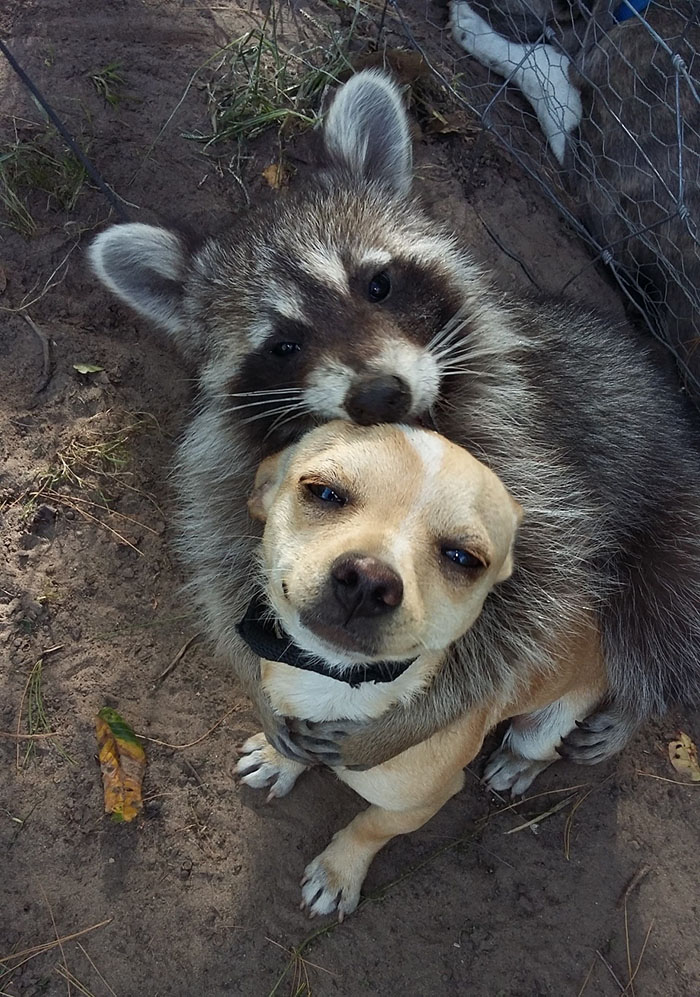
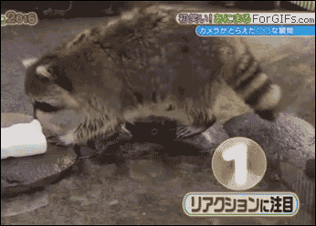
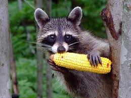

Social Behavior
Studies in the 1990s by the ethologists Stanley D. Gehrt and Ulf Hohmann suggest that raccoons engage in sex-specific social behaviors and are not typically solitary, as was previously thought. Related females often live in a so-called "fission-fusion society"; that is, they share a common area and occasionally meet at feeding or resting grounds. Unrelated males often form loose male social groups to maintain their position against foreign males during the mating season—or against other potential invaders. Such a group does not usually consist of more than four individuals. Since some males show aggressive behavior towards unrelated kits, mothers will isolate themselves from other raccoons until their kits are big enough to defend themselves.
With respect to these three different modes of life prevalent among raccoons, Hohmann called their social structure a "three-class society". Samuel I. Zeveloff, professor of zoology at Weber State University and author of the book Raccoons: A Natural History, is more cautious in his interpretation and concludes at least the females are solitary most of the time and, according to Erik K. Fritzell's study in North Dakota in 1978, males in areas with low population densities are solitary as well.
Dousing
One aspect of raccoon behavior is so well known that it gives the animal part of its scientific name, Procyon lotor; "lotor" is Latin for "washer". In the wild, raccoons often dabble for underwater food near the shore-line. They then often pick up the food item with their front paws to examine it and rub the item, sometimes to remove unwanted parts. This gives the appearance of the raccoon "washing" the food. The tactile sensitivity of raccoons' paws is increased if this rubbing action is performed underwater, since the water softens the hard layer covering the paws.
However, the behavior observed in captive raccoons in which they carry their food to water to "wash" or douse it before eating has not been observed in the wild. Naturalist Georges-Louis Leclerc, Comte de Buffon, believed that raccoons do not have adequate saliva production to moisten food thereby necessitating dousing, but this hypothesis is now considered to be incorrect. Captive raccoons douse their food more frequently when a watering hole with a layout similar to a stream is not farther away than 3 m (10 ft).
The widely accepted theory is that dousing in captive raccoons is a fixed action pattern from the dabbling behavior performed when foraging at shores for aquatic foods. This is supported by the observation that aquatic foods are doused more frequently. Cleaning dirty food does not seem to be a reason for "washing". Experts have cast doubt on the veracity of observations of wild raccoons dousing food.
Diet
Though usually nocturnal, the raccoon is sometimes active in daylight to take advantage of available food sources. Its diet consists of about 40% invertebrates, 33% plant material and 27% vertebrates. Since its diet consists of such a variety of different foods, Zeveloff argues the raccoon "may well be one of the world's most omnivorous animals". While its diet in spring and early summer consists mostly of insects, worms, and other animals already available early in the year, it prefers fruits and nuts, such as acorns and walnuts, which emerge in late summer and autumn, and represent a rich calorie source for building up fat needed for winter.
Contrary to popular belief, raccoons only occasionally eat active or large prey, such as birds and mammals. They prefer prey that is easier to catch, specifically crayfish, fish, amphibians and bird eggs. Raccoons are virulent predators of eggs and hatchlings in both birds and reptile nests, to such a degree that, for threatened prey species, raccoons may need to be removed from the area or nests may need to be relocated to mitigate the effect of their predations (i.e. in the case of some globally threatened turtles). When food is plentiful, raccoons can develop strong individual preferences for specific foods. In the northern parts of their range, raccoons go into a winter rest, reducing their activity drastically as long as a permanent snow cover makes searching for food difficult.